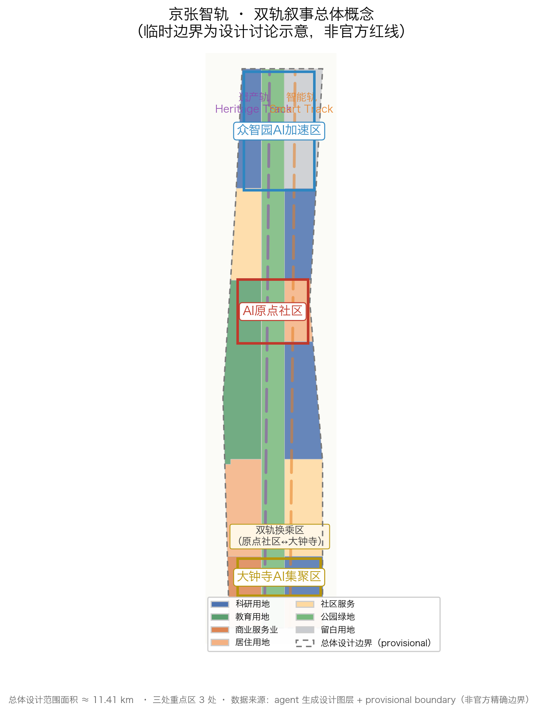
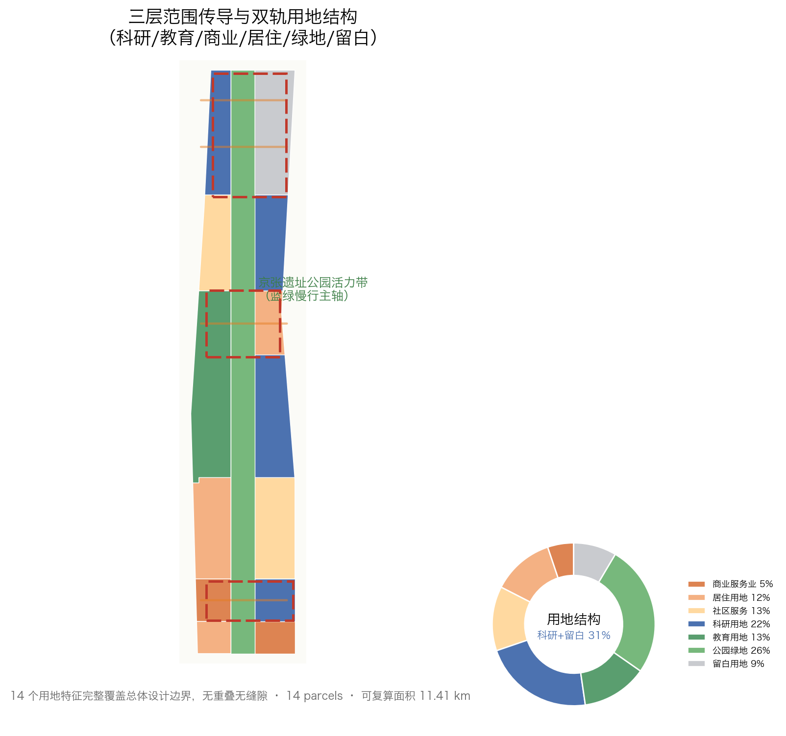
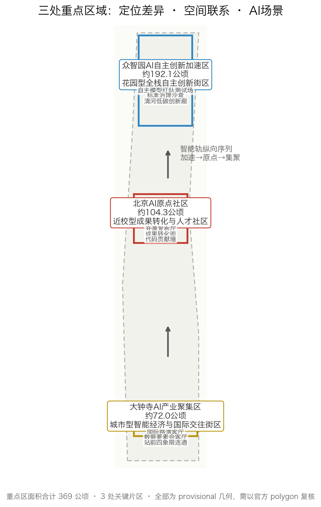
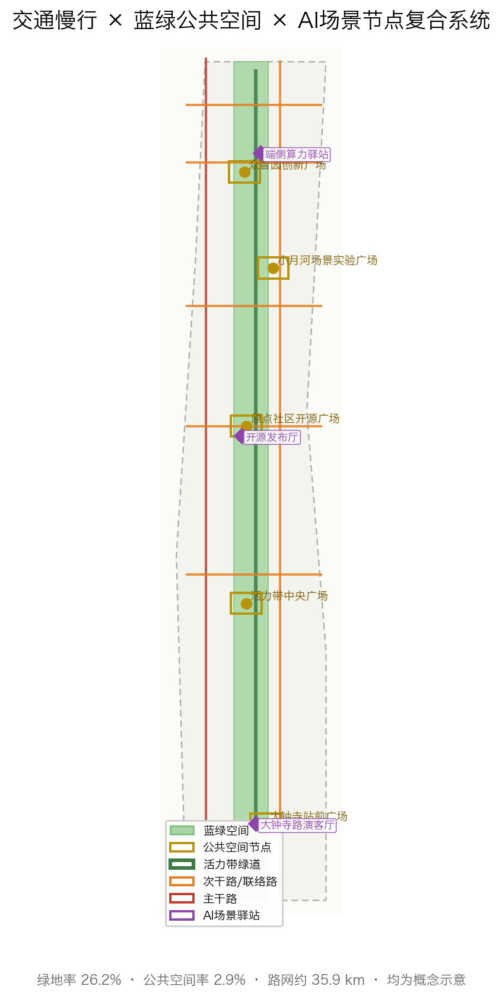

| Level | Scope | Work in this proposal | Data anchor |
|---|---|---|---|
| Coordinated Research Area | 43.6 km² | Five-stage innovation chain, global cases, future-city form | compliance_matrix / standard_matrix |
| Overall Design Area | 11.4 km² | Two-track structure, land use, buildings, transport, blue-green, phasing | geometry/land_use.geojson 等 |
| Key-Area Design Area | 368.4 公顷 | Detailed design of three key areas | geometry/key_areas.geojson |

| Area | Positioning | Signature scenarios |
|---|---|---|
| Zhongzhiyuan Acceleration Area | Garden-type full-stack innovation block | Model red-team test field, standards sandbox |
| Beijing AI Origin Community | Campus-adjacent conversion talent community | Open-source release hall, conversion street |
| Dazhongsi AI Industry Cluster | Smart-economy international-exchange block | International roadshow hall, data-element parlor |
| Code | Type | Placement |
|---|---|---|
| 0802 | Research | Northern Zhongzhiyuan + eastern smart track |
| 0804 | Education | Middle university direction |
| 05 | Commercial services | Southern Dazhongsi direction |
| 0701 / 0702 | Residential / Community services | Work-live balance and talent living support |
| 1401 | Park green space | Continuous along heritage-park vitality belt |
| 16 | Reserve | Flexible response to industry uncertainty |

| System | Strategy |
|---|---|
| Road network | Western arterial + eastern secondary + central greenway + six connectors ≈35.9 km |
| Transit connection | North 5th Ring crossing, Wudaokou, Qinghua East Rd W end, Dazhongsi station (concept) |
| Blue-green spine | Heritage-park vitality belt + Qinghe/Xiaoyue River support |
| Public space | Zhongzhiyuan, Origin, Dazhongsi station, Central, Xiaoyue River squares |
| AI scenario nodes | Edge-compute station, open-source hall, Dazhongsi roadshow hall |
| Item | Note |
|---|---|
| Concept Buildings基底 | 632 blocks, ≈124.7 ha, EPSG:4548 recomputation |
| Retain-renovate-demolish logic | Retain (heritage) - renovate (industry/campus) - new-build (key areas) - reserve (flexible) |
| Massing/character | Regulatory metrics (FAR/height/density/setback) pending official data |
| ID | Project | Type | Main dependency |
|---|---|---|---|
| JZ-01 | Heritage-park walking-gap stitch | Public space/交通 | Road redline, under-bridge, transport review |
| JZ-02 | Zhongzhiyuan Qinghe innovation interface | Blue-green/industry | River blue line, ecology, flood control |
| JZ-03 | Origin Community conversion street | Renewal/industry service | Campus boundary, ownership, ground floor |
| JZ-04 | Dazhongsi station 4-quadrant connectivity | Transit/slow traffic | Station, intersections, pipelines |
| JZ-05 | AI public services + edge-compute nodes | New infrastructure/public service | Energy, compute, safety, operator |
| JZ-06 | Global AI Week public route | Operation/brand | Public space许可、活动安全、版权清权 |
Phasing: P1 southern Dazhongsi → P2 middle Origin + vitality belt → P3 northern Zhongzhiyuan (geometry/phasing.geojson).
Open-source hall · safety sandbox · edge-compute station · AI walking nav · roadshow hall · Qinghe corridor · conversion street · data parlor · AI life street · Global AI Week
Model red-team field (Zhongzhiyuan) · urban-agent sandbox (Origin) · data-element sandbox (Dazhongsi)
Open-source dev · startup · head-enterprise visitor · resident · university student/teacher
| Task | Coverage |
|---|---|
| agent.1 Overall concept | Name "JZ SmartTrack", logo direction (dual track + nodes + signal colors), three-zones-two-wings loop, structure diagram |
| agent.2 Innovation ecosystem | 7 global cases + five-stage chain + ecosystem map + spatial mapping |
| agent.3 Scenario enablement | 10 scenario cards + 3 test/validation + 5 personas + scenario-space-operation mapping + privacy/human-review boundary |
| agent.4 Public space与朝圣地标 | 遗址公园 AI Public space + 组件库 + 3 处朝圣地标（铁轨起点纪念地、开源贡献荣誉墙、全球开发者荣誉墙） |
| agent.5 Cultural narrative | Jing-Zhang railway → Zhongguancun → AI culture narrative + signage system + global copy |
| agent.6 Long-term operation | Annual events, developer community, scenario access, public experience route, global communication & conversion |
Announcement 1.3.1-1.5.3.3 (17) + agent.1-agent.6 (6) all covered in compliance_matrix.json.
| ID | Source |
|---|---|
| OFFICIAL-ANNOUNCEMENT | Haidian Branch, BJMCPNR Qualification Pre-Announcement |
| AGENT-TASKBOOK | Agent open-call taskbook excerpt (agent_taskbook.json) |
| SITE-PACKAGE | brief/site-package machine-readable design package |
| SOURCE-REGISTRY | data/source_registry.json public registry |
| PROCESSED-FACT-PACK | data/processed/agent_fact_pack.md and CSVs |
| BOUNDARY-SOURCE / KEY-AREA-SOURCE | provisional_boundaries.geojson (provisional) |
All sources, licenses, and use boundaries in sources.json; copyright in report/copyright_statement.md.
| ID | Assumption |
|---|---|
| A-CONTROLS-001 | Regulatory metrics (FAR/height/density/setback), redlines, municipal and heritage conditions pending; provisional boundary is not official. |
Full assumptions in assumptions.json; risks and gaps in risk.json and the risk chapter.